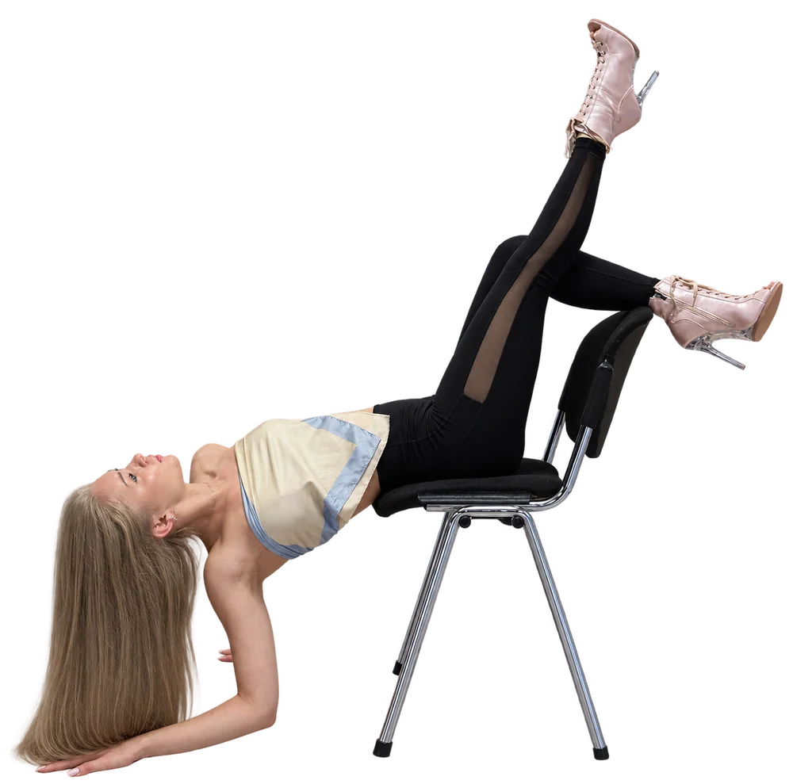
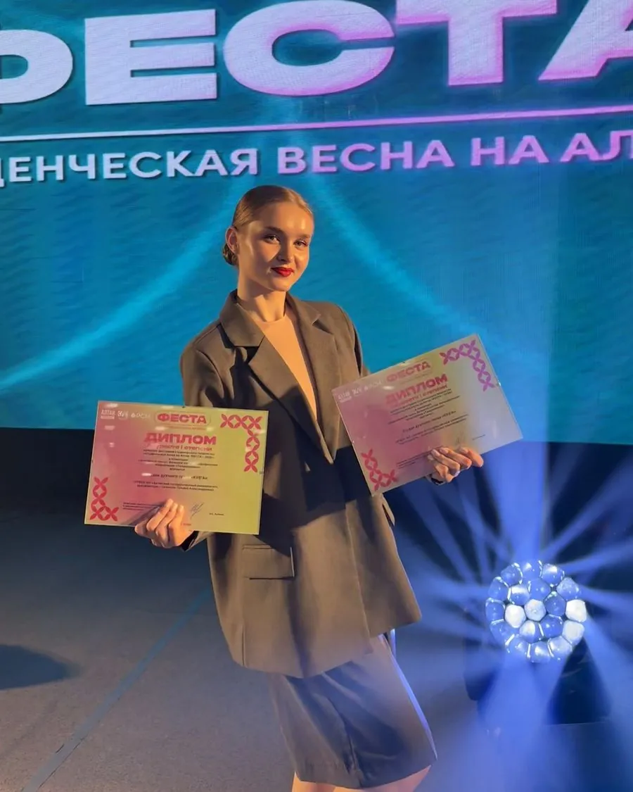
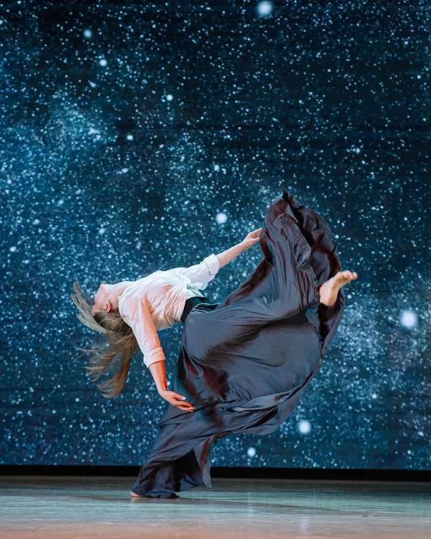
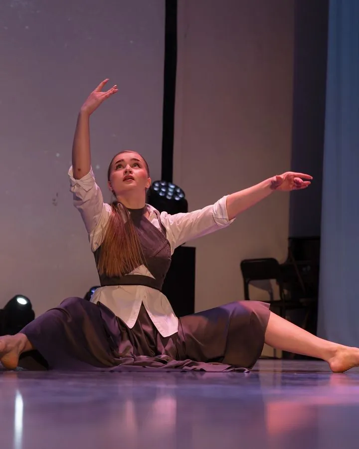
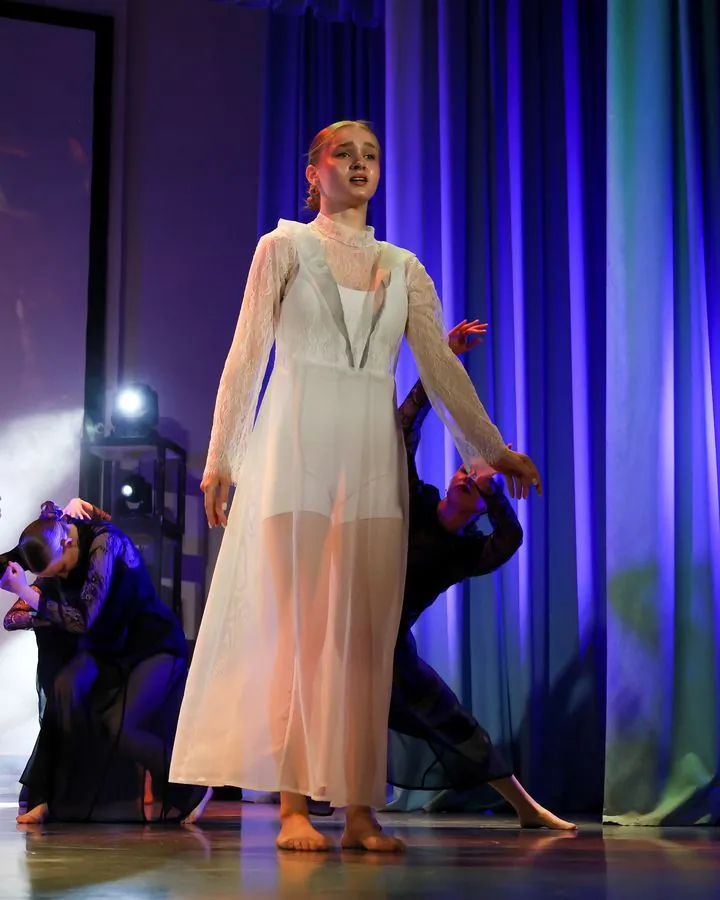

Женственность
Не глянцевая, а твоя собственная: без пошлости, через плавные линии, игривый взгляд и внутреннюю силу.
Пластика, женственность и уверенность в теле — даже если ты никогда не танцевала!
Записаться на занятие
Место, где можно расслабиться и кайфовать от своего отражения.
Не глянцевая, а твоя собственная: без пошлости, через плавные линии, игривый взгляд и внутреннюю силу.
Убираем «деревянность» в теле. Ты научишься плавно управлять корпусом и бедрами так, будто танцевала всю жизнь.
Уверенность начинается со спины. Разгружаем шею и поясницу, расправляем плечи и возвращаем легкую походку.
Выплескиваешь стресс недели под крутые треки и выходишь из зала не выжатой, а наполненной и заряженной.
✦Веду Lady Dance в студии «Твой мир»

Танцую сама — и учу танцевать так, чтобы от тебя невозможно было оторвать взгляд.
Большой танцевальный опыт помогает мне подстроить темп под группу и объяснить движение по-другому, если сразу не получается.
Я участница и призер всероссийских и международных конкурсов, выступала в Санкт-Петербурге, Казани и других городах России.
Помогаю раскрепоститься, развить мягкость движений, растяжку и уверенную подачу.




Праздник, драйв и поддержка — такую атмосферу я привезла с фестивалей и переношу в свой зал. Здесь каждая чувствует себя частью команды.
«А вдруг я буду выглядеть неловко?» — спойлер: не будешь.
Никто не приходит в группу с врожденной кошачьей пластикой. Тело в начале пути может быть зажатым из-за работы и стресса — и это нормально. Моя задача как тренера — шаг за шагом передать тебе свой опыт, научить двигаться мягко, игриво и с эмоцией. Пластика не нужна на входе — мы развиваем ее здесь.
В зале каждая девушка смотрит только в одно место — на себя в зеркало: все заняты своим движением. Здесь никто никого не оценивает и не сравнивает. Можно ошибаться, сбиваться с ритма и смеяться над этим.
Наша группа — это не про соперничество, это теплое женское комьюнити. Каждая из девушек когда-то зашла в этот зал впервые и так же переживала. Новеньких мы встречаем с радостью, помогаем и поддерживаем. Ты сразу почувствуешь себя своей.
СР / ПТ
21:00–22:00
Студия танца
«Твой мир»
Первое занятие ни к чему не обязывает — это просто повод примерить этот танец на себя, познакомиться со мной и почувствовать атмосферу зала. Напиши мне: я расскажу, какую удобную одежду взять с собой, и отвечу на любые вопросы.